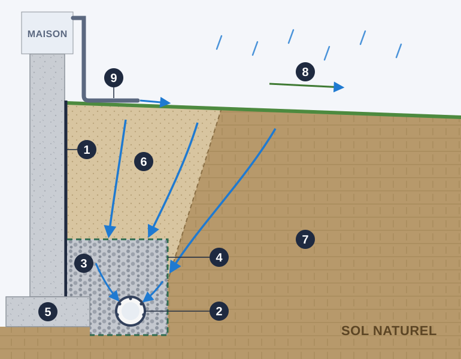

Quand un propriétaire nous appelle pour de l'eau au sous-sol, il pense souvent à une fissure. Pourtant, très souvent, la vraie cause est en dessous : un drain français bouché, écrasé ou absent. Comprendre son rôle aide à prendre la bonne décision, et à éviter de payer pour réparer la mauvaise chose.

- 1Membrane d'imperméabilisation
- 2Drain perforé
- 3Pierre nette
- 4Membrane géotextile
- 5Semelle de fondation
- 6Remblai
- 7Sol naturel (argile)
- 8Pente du terrain
- 9Descente de gouttière rallongée
À quoi sert un drain français
Le drain français est un tuyau perforé posé tout autour de la maison, au pied de la fondation. Il est entouré de pierre nette et d'une membrane géotextile qui empêche la terre de le boucher. L'eau qui s'infiltre dans le sol autour de la maison descend jusqu'à lui, entre par les perforations et est évacuée vers le puisard ou l'égout pluvial.
Sans lui, l'eau s'accumule contre les murs de fondation. Elle exerce alors une pression constante, appelée pression hydrostatique, et finit par trouver un passage : une fissure, le joint entre le mur et la dalle, un trou de tige d'attache.
Pourquoi il est essentiel ici
- La fonte des neiges. Chaque printemps, des semaines de neige fondent en même temps, souvent sur un sol encore gelé en surface. L'eau n'a nulle part où aller sauf le long des fondations.
- Les sols argileux. Une bonne partie de Montréal, de Laval et de la Rive-Nord repose sur de l'argile, qui laisse mal passer l'eau. Elle reste donc longtemps près de la maison.
- Les grosses pluies. Les orages d'été et les pluies d'automne apportent beaucoup d'eau en peu de temps.
- Le Code de construction exige, en règle générale, un drainage au pied des fondations des bâtiments avec sous-sol. C'est un élément de base de la maison, pas une option.
Pourquoi un drain arrête de fonctionner
L'âge et le matériau
Les drains des maisons plus anciennes étaient souvent en terre cuite ou en plastique rigide sans membrane. Avec le temps, ils s'écrasent sous le poids du remblai, se déplacent ou se remplissent de terre.
L'ocre ferreuse
Dans certains sols riches en fer, des bactéries forment un dépôt orangé et gélatineux qui colmate peu à peu le drain et sa membrane. C'est un problème connu dans plusieurs secteurs de la région de Montréal, de Laval et de la Rive-Nord.
Les racines et les sédiments
Des racines d'arbres plantés trop près de la maison peuvent entrer dans le drain. Une membrane abîmée laisse aussi passer la terre fine, qui finit par le boucher.
6 signes que votre drain français ne fait plus son travail
- De l'eau au bas des murs ou une ligne d'humidité au joint entre le mur et la dalle, surtout au printemps.
- Un puisard qui reste sec après une forte pluie, alors que le sous-sol prend l'humidité.
- Une boue orangée dans le puisard ou aux sorties de drain : signe typique d'ocre ferreuse.
- De l'efflorescence, ces dépôts blancs sur le béton laissés par l'eau qui traverse les murs.
- Une odeur d'humidité ou de la moisissure au périmètre du sous-sol, sur le bas des murs finis ou sur le tapis.
- Une maison plus ancienne dont le drain est d'origine, ou dont on ne connaît pas l'état.
Une seule fissure qui coule n'indique pas forcément un drain défectueux. Si l'eau entre seulement par une fissure précise, une réparation par injection peut suffire. Si elle entre à plusieurs endroits ou au bas des murs, le drainage est probablement en cause.
Nettoyer ou remplacer?
La première étape est de confirmer l'état du drain. Une inspection par caméra permet de voir s'il est simplement encrassé ou s'il est écrasé, déformé ou colmaté.
- Drain en bon état mais encrassé : un nettoyage peut lui redonner du service.
- Drain écrasé, déformé ou colmaté par l'ocre : il faut le remplacer.
Comment se fait le remplacement
On excave le long de la fondation jusqu'à la semelle, en protégeant le terrain et les aménagements. Comme le mur est dégagé, c'est le moment idéal pour réparer les fissures par l'extérieur et poser une membrane d'imperméabilisation. On installe ensuite le nouveau drain dans la pierre nette, enveloppé de géotextile, puis on remblaie et on nivelle pour éloigner l'eau du bâtiment.
Ces travaux se planifient du printemps à l'automne, quand le sol n'est pas gelé. Les détails sont sur notre page remplacement de drain français.
Les gestes simples qui aident votre drain
- Rallongez les descentes de gouttières pour rejeter l'eau loin de la maison.
- Vérifiez que le terrain descend en s'éloignant de la fondation, et non vers elle.
- Gardez les arbres à bonne distance des murs.
- Vérifiez votre puisard et sa pompe chaque printemps, avant la fonte des neiges.
En résumé
Le drain français est la première ligne de défense de votre sous-sol. Quand il fonctionne, on l'oublie. Quand il ne fonctionne plus, l'eau finit toujours par entrer. Si vous voyez de l'eau au bas des murs, de l'efflorescence ou une boue orangée dans le puisard, faites vérifier votre drain avant le prochain printemps.